Simple Pendulum
Il pendolo semplice, è costituito da un punto materiale appeso tramite un filo inestensibile e di massa trascurabile. La posizione di equilibrio statico è quella verticale, con il punto fermo ed il filo teso; la forza esercitata dal filo (tensione del filo) vale in modulo T = mg.
Se spostiamo il punto dalla verticale esso inizia ad oscillare attorno a questa. Vogliamo studiare, in assenza di attrito, questo moto oscillatorio.
Le forze agenti sul punto P sono il peso mg e la tensione del filo T per cui il moto è regolato da mg + T = ma.
Consideriamo le componenti della risultante, R delle forze lungo la traiettoria, orientata come in fig. 3.32 e ortogonalmente alla traiettoria (verso positivo da P a O):
RT = −mg sin θ = maT, RN = Tf −mg cos θ = maN (3.13.0)
Il segno negativo della componente lungo la traiettoria è dovuto al fatto che la forza ha segno opposto rispetto a quella della coordinata s sulla traiettoria. Infatti per s < 0, posizioni sull'arco di circonferenza a sinistra della verticale, la forza è diretta secondo il verso assunto positivo, mentre per s > 0 la forza è diretta secondo il verso negativo (il risultato non dipende dalla scelta del verso di s). Fisicamente RT è una forza di richiamo che tende a riportare il punto sulla verticale, anche se non è di direzione costante come nel caso delle forze elastiche.
L'accelerazione angolare istantanea, α (secondo la 2.13)
aT = Lα = d2θ/dt2; inoltre aN = v2/L
Sostituendo le componenti dell'accelerazione dalla (3.13.0), abbiamo
A sinistra abbiamo l'equazione differenziale del moto del pendolo, la cui soluzione ci fornisce la legge oraria del moto θ(t); però, per θ qualunque, la soluzione è analiticamente complicata.
Consideriamo allora piccoli valori di θ e sviluppiamo in serie sen θ:
sen θ = θ - θ3/3! + ..
Quantitativamente, per θ ≤ 0.122 rad = 7°, sen θ si può approssimare con θ comettendo un errore relativo che è sempre minore di 10−3. Quindi per piccole oscillazioni l'equazione differenziale diventa
e coincide con quella del moto armonico semplice (1.16), posto ω2 = g/L.
In conclusione il moto del pendolo è oscillatorio armonico quando l'ampiezza delle oscillazioni è piccola così che sen θ = θ. La legge oraria del moto è
θ = θ0 sen (ωt + φ)
l'ampiezza θ0 dell'oscillazione e la fase iniziale φ dipendono dalle condizioni iniziali del moto, come discusso nei par. 1.6 e 3.10 (v. es. 2.2).
Il periodo del moto T è dato da
T = 2π / ω = 2π sqrt(L/g)
ed è indipendente dall'ampiezza (isocronismo delle piccole oscillazioni).
La legge oraria dello spostamento lungo l'arco di circonferenza è dato da
s = Lθ = Lθ0 sen (ωt + φ)
mentre la velocità angolare e la velocità lineare hanno le espressioni
ω = dθ/dt = ωθ0 cos (ωt + φ)
La velocità è massima quando il punto passa per la verticale (θ = 0) e nulla agli estremi delle oscillazioni (θ = θ0) dove il verso del moto si inverte. Notiamo che i risultati cinematici non dipendono dalla massa del pendolo, per le stesse ragioni esposte alla fine del par. 3.12.
Quando l'ampiezza delle oscillazioni non è picolla, il moto è ancora periodico, ma non armonico, e il periodo T' dipende dall'ampiezza; detta ΔT = T' − T la differenza tra il periodo vero e quello calcolato con (3.10).
Risolto il problema del moto, note quindi θ(t) e v(t), possiamo ritornare all'equazione del moto proiettata sulla normale alla traiettoria e calcolare la tensione del filo che sostiene il punto:
Tf = m[gcos θ(t) + v2(t)/L]
La tensione è massima nella posizione verticale, dove sia cos θ(t) che v(t) assumono i valori massimi, ed è minima nei punti di inversione. Sia (3.15) che queste conclusioni valgono qualunque sia il valore dell'ampiezza; per piccole oscillazioni la tensione si calcola inserendo in (3.15) le espressioni analitiche trovate per θ(t) e v(t).
If an apple swings on a long thread, does it have simple harmonic motion? If so, what is the period T? To answer, we consider a simple pendulum, which consists of a particle of mass m (called the bob of the pendulum) suspended from one end of an unstretchable, massless string of length L that is fixed at the other end, as in Fig. 15-9a. The bob is free to swing back and forth in the plane of the page, to the left and right of a vertical line through the pendulum's pivot point. The forces acting on the bob are the force T from the string and the gravitational force Fg, as shown in Fig. 1, where the string makes an angle (θ) with the vertical. We resolve Fg into a radial component Fg cos θ and a component Fg sin θ that is tangent to the path taken by the bob. This tangential component produces a restoring torque about the pendulum's pivot point because the component always acts opposite the displacement of the bob so as to bring the bob back toward its central location. That location is called the equilibrium position (θ = 0) because the pendulum would be at rest there were it not swinging.
For Newton's second law, this force must be equal the product mass times acceleration:
mLθ '' = −mg sin θ
that is
θ '' = −g/L sin θ
The last equation is the exact equation of motion for the simple pendulum. Because of the presence of the term in sin θ, this second order ODE is non-linear and cannot be solved by using the standard technique for linear ODEs with constant coefficients. If θ is always small then sin θ can be approximated by θ in which case the equation of motion becomes
θ '' = − (g/L) θ
This is the linearised equation for the simple pendulum, which holds approximately for oscillations of small amplitude (we used the fact that sin θ ≈ θ, for small θ). Although we do not cover linear oscillations until Chapter 5, many readers will recognise equation (4.7) as the simple harmonic motion equation and will know that the period T of the oscillations is given by T = 2π(L/g)1/2, independent of the (small) amplitude. We find that
θ(t) = A cos(ωt + θ0)
where ωt + θ0 are constants depending on the initial conditions of the problem.
Galileo dedusse l'isocronismo di un pendolo, ovvero il fatto che, per piccoli angoli rispetto alla verticale, la durata di un'oscillazione non dipende dall'ampiezza della stessa.